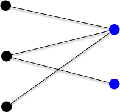
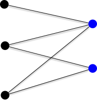
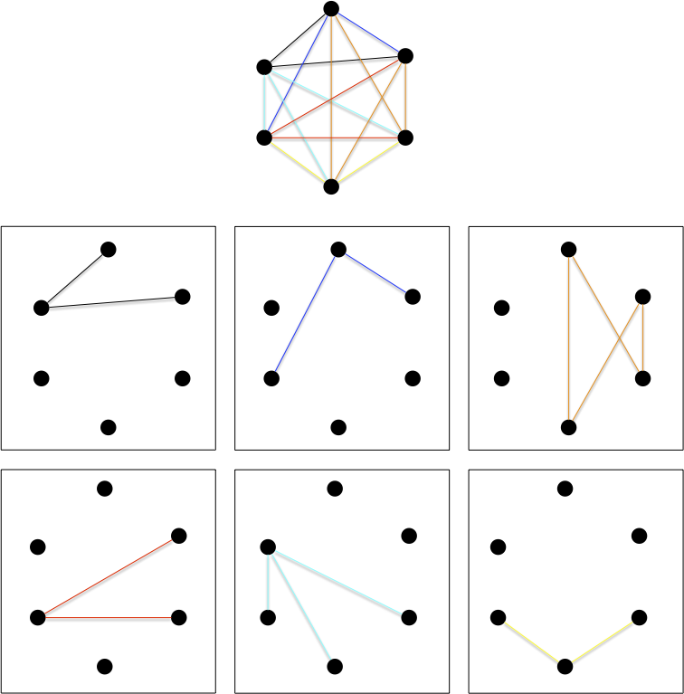
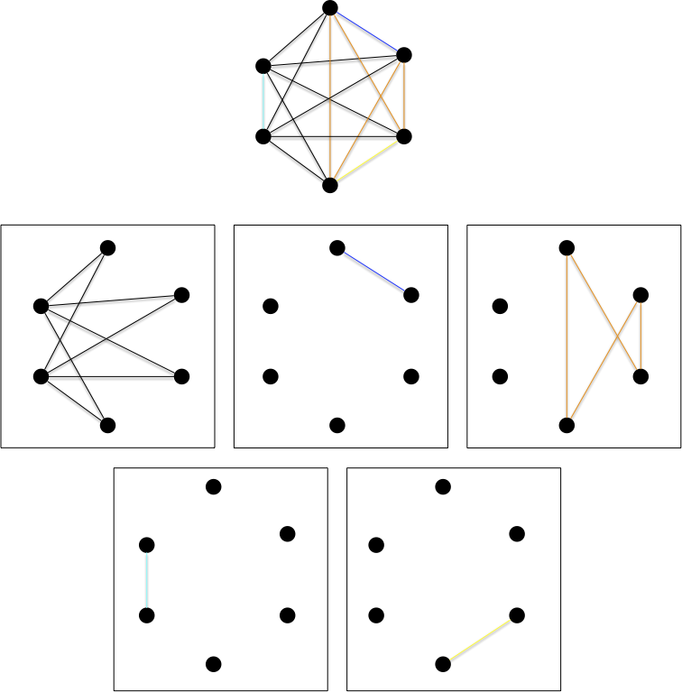
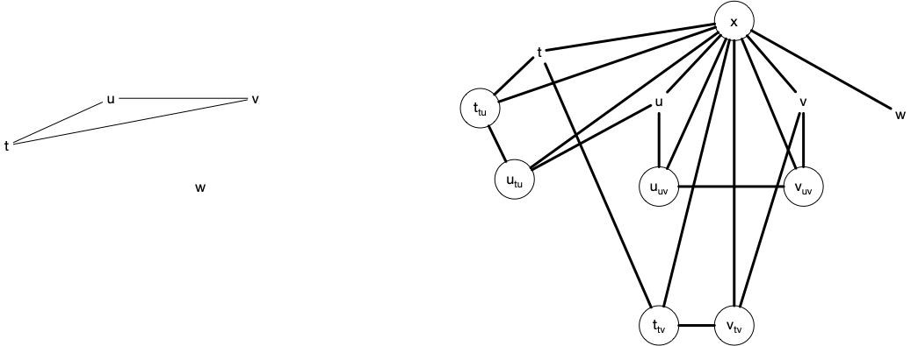

Graphes biparti
Les graphes biparti font parti de ces classes de graphes assez généraux pour être présent partout et assez spécifique pour que tous se passe bien (les principaux problèmes NP-complets dans le cas général deviennent polynomiaux voir triviaux).
C'est une classe de graphe importante à connaître car, parfois curieusement, ils apparaissent dans nombre de problèmes de graphes. Parfois comme sous-cas facilement solvable, parfois comme fondement d'une preuve. Nous allons voir quelques définitions et caractérisation des graphes bi-parti ainsi que quelques exercices classique (et élégant).
Définitions
Bi-parti
Définition
Un graphe $G=(V, E)$ est biparti s'il existe une bipartition $V_1$ et $V_2$ de $V$ ($V_1 \cap V_2 = \varnothing$ et $V_1 \cup V_2 = V$) en deux stables.
Par exemple le graphe suivant :

Les graphes bipartis sont une famille héréditaire, il est en effet clair que :
Proposition
Tous sous-graphe ou graphe partiel d'un graphe biparti est biparti.
On a déjà vu ce genre de graphe sans le savoir lors de l'étude du transport amoureux : le problème du mariage entre 2 populations distinctes se modélise comme un graphe bi-parti où chaque population est un stable.
Montrez que si un graphe bi-parti est connexe, sa bi-partition en deux stables est unique.
solution
solution
Si le graphe est connexe, on peut parcourir celui-ci (en largeur ou en profondeur) à partir d'une racine pour créer un arbre planté.
Chaque élément sera forcément dans le stable différent de son parent : l'affectation de chaque élément dépend uniquement de l'affectation de la racine.
La propriété précédente n'est bien sur plus vraie si le graphe n'est pas connexe :
Montrez que le graphe discret (sans arêtes) à $n$ sommets possède $2^{n-1}-1$ bi-partitions possibles.
solution
solution
Par récurrence. Un graphe discret à 2 sommets possède bien $2^{2-1}-1 = 1$ bipartition.
On suppose la propriété vrai pour les ensembles à $n$ éléments et soit le graphe discret $G=(V, \varnothing)$ à $n+1$ sommets et soit $x$ un de ces éléments. Pour toute les bipartitions $x$ est dans une des deux partitions et, à part celle où $x$ est tout seul dans une classes, si on supprime $x$ on a une bipartition d'un ensemble à $n$ éléments : une bipartition à $n+1$ élément est donc soit :
- $\{\{x\}, V\backslash \{x\}\}$
- $\{U\cup \{x\}, V\}$ ou $\{U, V\cup \{x\}\}$ avec $\{U, V\}$ une bipartition de $V\backslash \{x\}$
Il y a donc $2\cdot (2^{n-1}-1) + 1 = 2^n-1$ bipartitions à $n+1$ éléments (il y en a $2^{n-1}-1$ pour un ensemble à $n$ éléments par hypothèse de récurrence), ce qui conclut la preuve.
Le nombre de partitions d'un ensemble à $n$ éléments en $k$ sous-ensembles est appelé nombre de Stirling de second espèce
En conclure :
Montrez qu'un graphe biparti à $p$ composantes connexes possède $2^{p}-1$ bipartitions possibles.
solution
solution
Soient $\{X_i, Y_i\}$, $1\leq i \leq p$, les $p$ bipartitions associées au stables des $p$ composantes connexes de $G$. Un des deux stables de $G$ sera alors :
- soit l'union de tous les $X_i$
- soit une partie des $X_i$, ce qui correspond à ue bipartition des $X_i$, $1\leq i \leq p$.
Il y a donc autant de de façon de faire que de bipartition à $p$ élément plus 1.
Terminons cette série d'exercices par une propriété sur la cardinalité :
Soit $G$ un graphe biparti tel que $\delta(x) = k > 0$ pour tout sommet $x$. Montrez que les deux stables ont même cardinal.
solution
solution
Soient $U$ et $V$ une bipartition en deux stables de $G$. On a : $\sum_{u\in U} \delta(u) = \sum_{v\in V} \delta(v)$
Or $\sum_{u\in U} \delta(u) = k\cdot \vert U\vert$ et $\sum_{v\in V} \delta(u) = k\cdot \vert V\vert$ ce qui conclue la preuve.
Biparti complets
Définition
Un graphe biparti complet est le graphe $K_{p,q} = (V_p \cup V_q, V_p \times V_q)$, avec $\vert V_p \vert = p$ et $\vert V_q \vert = q$
Le graphe $K_{2, 3}$ est par exemple :

Les graphes bipartis complets sont aussi parfois appelé une biclique
On retrouve les graphes bi-partis complets dans plein de champs de la théorie des graphes car ils ont plein de chouettes propriétés. Par exemple :
Montrez que si un graphe biparti est hamiltonien, alors la taille des 2 stables est identique.
solution
solution
Si le graphe biparti admet un cycle hamiltonien il est connexe et donc n'admet qu'un 2 stables. Soit $x_1x_2\dots x_nx_1$ un cycle hamiltonien. Comme un graphe biparti ne peut avoir de cycle de longueur impaire $n$ est forcément paire.
On conclue la preuve en remarquant que les $x_i$ paires et les $x_i$ impairs sont forcément dans des stables différents.
Déduire de l'exercice précédent que les seuls graphes bipartis complets hamiltoniens sont les graphes $K_{p, p}$ avec $p\geq 1$.
solution
solution
Si le graphe biparti complet $K_{p, p}$ est composé des stables $\{x_1,\dots x_n\}$ et $\{y_1,\dots y_n\}$, le cycle $x_1y_1\dots x_iy_i\dots x_ny_nx_1$ est hamiltonien : tous les graphes $K_{p, p}$ sont hamiltoniens.
Reconnaissance
Savoir si un graphe est biparti est "facile" en utilisant un algorithme de marquage qui associe une couleur à chaque sommet.
On considère que le graphe est connexe dans l'algorithme suivant. S'il ne l'est pas on le relance sur chacune des parties connexes.
On retrouve un algorithme de marquage puis examen de sommets, comme l'algorithme de recherche de chaîne augmentante de Ford et Fulkerson. Ce principe général permet de résoudre efficacement beaucoup de problèmes en théorie des graphes.
Initialisation :
On possède deux couleurs.
Soit x un sommet du graphe que l'on marque avec une couleur
Boucle principale :
tant qu'il existe x, un sommet marqué non examiné:
examiner x
pour chaque voisin y de x :
si y est marqué avec la couleur de x:
FIN : le graphe n'est pas biparti
sinon si y n'est pas marqué:
marquer y avec la couleur différente de celle de x
FIN : le graphe est biparti et la couleur des sommets determine les 2 stables
TBD à écrire propre
- on voit bien tous les sommets car connexe : on le fait par récurrence sur la longueur du chemin entre $x$ et $y$
- chaque couleur est obligatoire
- linéaire n+m si on utilise un parcours en largeur (les éléments marqués sont dans une file).
Caractérisation
Proposition
Un graphe est biparti si et seulement si il ne contient pas de cycle de longueur impaire.
Vous allez en faire la démonstration grâce à deux exercices.
Un graphe biparti ne contient pas de cycle de longueur impaire.
corrigé
corrigé
Si le graphe possède un cycle, ses arêtes doivent passer d'un stable à l'autre un nombre pair de fois.
Et dans l'autre sens :
Un graphe n'est pas biparti s'il contient un cycle de longueur impaire.
corrigé
corrigé
On utilise l'algorithme et si l'algorithme répond non c'est qu'on a un cycle de longueur impaire.
On le verra tout au long de ce cours l'existence de cycles de longueurs impairs pose de nombreux problèmes algorithmique. Se restreindre aux graphes bi=parti va souvent accélérer et rendre optimal des algorithmes autrement plus compliqués sinon.
Partition en graphes Biparti
Le problème de partition d'un graphe en graphes bipartis est un problème de communication réseau initialement posé (et résolu) par les deux chercheurs Graham et Pollak des laboratoires Bell dans les années 1970.
Des ordinateurs liés entre eux deux à deux par un graphe complet doivent tous communiquer entre eux. La contrainte est que chaque ordinateur ne peut être que dans 3 états :
- endormis
- en transmission avec un unique autre ordinateur.
Chaque couple d'ordinateur doit s'échanger une donnée. Combien d'étapes au minimum sont-elles nécessaires pour tout couple d'ordinateurs aient communiqué ?
Ce problème peux se décrire comme un problème de graphe. Commençons par définir une partition d'un graphe.
Définition
Une partition d'un graphe $G=(V, E)$ est une suite $G_i=(V, E_i)$, avec $1\leq i \leq m$ telle que :
- $\cup_{1\leq i \leq m} E_i = E$
- $E_i \cap E_j = \varnothing$ pour tout $1\leq i \neq j \leq m$
La définition explicite le fait que l'on partitionne l'ensemble des arêtes d'un graphe. On spécifie souvent la famille de graphe à laquelle la partition doit appartenir (pour nous des graphes bipartis) et comme tout graphe à $n$ sommet est inclut dans $K_n$ la clique à $n$ sommet, c'est lui que l'on va chercher à partitionner.
Notre problème de partition est :
Définition
Combien faut-il au minimum de graphes bipartis (complets) pour partitionner $K_n$ ?
Comme il faut minimiser le nombre d'éléments de la partition et que chaque arête du graphe complet doit être utilisé, les graphes bi-partis sont forcément complets.
Remarquons tout de suite que ce problème admet une solution, il en faut moins de $n(n-1)/2$ puisque les graphes G_{i,j} = (\{i, j\}, \{ij\})$ sont tous bipartis.
On peut bien sur faire mieux, comme le montre l'exemple suivant qui partitionne $K_6$ en 6 graphes bi-partis complets :

Vous avez peut-être remarqué, mais la partition ci-dessus n'est pas minimale, on peut faire mieux :
Montrer que l'on peut toujours décomposer $K_n$ en $n-1$ étoiles.
Définition
Une étoile est un graphe $G = (V, E)$ tel qu'il existe $x\in V$ avec $E = \{xy | y \in V\backslash \{x\}\}$
corrigé
corrigé
Les étoiles en questions sont $G_i = (V_i, E_i)$ avec $1\leq i < n$ :
- $V_i = \{j | j \geq i \}$
- $E_i = \{\{i, j\} | i < j \}$
Le partitionnement en étoile n'est pas unique, par exemple avec $K_6$ :

En revanche, $n-1$ est bien le minimum :
Proposition
On ne peut décomposer $K_n$ en moins de $n-1$ graphes bipartis complets.
preuve
preuve
La preuve est atypique et ne parlera pas de graphes. De plus, on ne connaît pas de preuve combinatoire. J'ai repris la preuve de Proofs from the book (chapitre 11, théorème 4 de la sixième édition) qui comme chacune des preuves du livre est extrêmement élégante.
Soit $K_n$ le graphe complet avec comme ensemble de sommets $V = \{1, \dots, n\}$. Soit $(B_k)_{1\leq k \leq m}$ une de ses décompositions en en $m$ graphes bipartis complets, et on note également $\{U_k, V_k\}$ les deux stables de $B_k$.
Soient $x_1, \dots, x_n$, $n$ variables réelles. On considère alors Le système d'équations linéaires formé des $m+1$ équations suivantes :
- $\sum_{1\leq i \leq n}x_i = 0$
- $\sum_{i \in U_k}x_i = 0$ pour tout $1\leq k \leq m$
Si $m + 1 < n$ ce système va posséder une solution non nulle $(c_1, \dots, c_n)$ (il existe $i$ tel que $c_i \neq 0$). Nous allons montrer que ceci est impossible.
Comme pour tout $i \neq j$, il n'existe qu'un unique $k$ tel que $x_i \in U_k$ et $x_j \in V_k$, on a l'égalité :
Comme $\sum_{1\leq i\leq n}c_i = 0$ on a aussi :
Or $\sum_{i \in U_k}c_i = 0$ pour tout $1\leq k \leq m$, ce qui implique :
Ce qui n'est possible que si $c_i = 0$ pour tout $1\leq i \leq n$ : contradiction. Notre hypothèse était donc fausse, on a $m + 1 = n$.
Sous-graphes bi-partis
Nous allons montrer des encadrements sur les graphe possédant, ou pas, des sous-graphes bi-partis.
Sous-graphe bi-parti inclus
Le grand retour de la méthode probabiliste pour résoudre un problème à priori très compliqué.
Proposition
Dans tout graphe $G=(V, E)$ à $m$ arêtes, il existe un sous-graphe bi-parti $G'$ à au moins $\frac{m}{2}$ arêtes.
preuve
preuve
On va associer à chaque sommet du graphe $G$ une couleur parmi 2 choix possibles (disons rouge et noir) de façon uniforme et indépendante.
On considère ensuite le sous-graphe couvrant $G'$ où l'on a supprimé de graphe toutes les arêtes dont les sommets de sont de couleurs différentes. La probabilité pour une arête $xy$ d'être dans $G'$ est $\frac{1}{2}$. Il y a en effet 4 possibilité pour chaque arêtes, chacune de probabilité $\frac{1}{4}$ :
- soit $x$ et $y$ sont rouges
- soit $x$ est rouge et $y$ est noir
- soit $x$ est noir et $y$ est rouge
- soit $x$ et $y$ sont noires
De là, en notant $\mathcal{G}'$ l'ensemble de tout ces sous-graphes possibles, l'espérance du nombre d'arêtes dans $G'$ est :
On termine la preuve en remarquant que si le nombre moyen d'arête est $\frac{m}{2}$, il est indispensable qu'il existe au moins un sous-graphe $G^\star$ de $G$ l'atteignant.
Notez comment la preuve est élégante ! C'est souvent le cas lorsque l'on utilise la méthode probabiliste. Cependant, ces preuves sont non constructives et dans notre cas trouver ce graphe bi-parti, ou tout du moins le plus grand n'est pas facile du tout. C'est en effet un effet un problème algorithmique classique :
Problème
- nom : MAX-CUT
- Entrée :
- un graphe
- un entier $K$
- Question : le graphe contient-il une bipartition $V_1$ et $V_2$ de ses sommets tels que $\vert \{xy \vert xy \in V(G), x \in V_1, y in V_2 \} \geq K$ ?
Une coupe dans un graphe est soit une bi-partition de ses sommets, soit l'ensemble des arêtes dont les extrémités sont dans des classes différentes.
Qui est NP-complet :
Proposition
Le problème MAX-CUT est NP-complet.
preuve
preuve
On montre que STABLE ≤ MAX-cut
Soit $(G, K)$ une instance du problème stable. On construit une instance de MAX-CUT en construisant le graphe $G'=(V', E')$ tel que :
- $V' = V(G) \cup \{x \} \cup (\cup_{e\in E(G)} \{ e_u, e_v \})$
- $E' = (\cup_{u\in V(G)} \{xu \}) \cup (\cup_{uv\in E(G)} \{ u_{uv}v_{uv}, uu_{uv}, vv_{uv}, xu_{uv}, xv_{uv} \})$
La figure ci-dessous montre un graphe $G$ (à gauche) instance de STABLE et le graphe $G'$ associé (à droite), instance de MAX-CUT :

Montrons la réduction.
Si $G$ admet un stable $I$ de taille $K$, on construit l'ensemble $I'$ de sommets de $G'$ contenant $I$ et tous les sommets $uv_u$ tel que que $v \in I$ (resp. $uv_v$ tel que que $u \in I$). Notez que pour toute arête $uv$ de $G$ :
- comme $I$ est un stable ($u$ et $v$ ne peuvent être dans $I$ si $uv \in E(G)$), au moins un des deux sommets $uv_u$ ou $uv_v$ est dans $I'$.
- si $uv_u$ est dans $I'$ mais pas $uv_v$, la bipartition $(I', V'\backslash \{ I' \})$ coupe 4 des 5 arêtes $\{u_{uv}v_{uv}, uu_{uv}, vv_{uv}, xu_{uv}, xv_{uv} \}$
- si $uv_u$ et $uv_v$ sont dans $I'$, la bipartition $(I', V'\backslash \{ I' \})$ coupe 4 des 5 arêtes $\{u_{uv}v_{uv}, uu_{uv}, vv_{uv}, xu_{uv}, xv_{uv} \}$
Au final si $I$ est un stable de taille $K$ pour $G$, alors $(I', V'\backslash \{ I' \})$ est une coupe de taille $K + 4\cdot e(G)$ pour $G'$.
Réciproquement soit $(I', V'\backslash \{ I' \})$ une coupe de taille $K' \geq K + 4\cdot e(G)$ pour $G'$. On peut supposer sans perte de généralité que $x\notin I'$ (sinon on échange les deux ensemble formant la bipartition) et on considère $I = I' \cap V(G)$.
Soit $F$ l'ensemble des arêtes $uv$ de $G$ telles que $u$ et $v$ soient dans $I$. On a que :
- si $uv \in F$, la bipartition $(I', V'\backslash \{ I' \})$ ne peut couper au maximum que 3 des 5 arêtes $\{u_{uv}v_{uv}, uu_{uv}, vv_{uv}, xu_{uv}, xv_{uv} \}$,
- si $uv \in E(G) \backslash F$, la bipartition $(I', V'\backslash \{ I' \})$ ne peut couper au maximum que 4 des 5 arêtes $\{u_{uv}v_{uv}, uu_{uv}, vv_{uv}, xu_{uv}, xv_{uv} \}$
On en déduit que $K' \leq \vert I\vert + 3 \cdot \vert F\vert + 4 \cdot (e(G) - \vert F \vert) = \vert I\vert + 4 \cdot e(G) - \vert F \vert$. Comme $K + 4 \cdot e(G) \leq K'$ on a $\vert I\vert \geq K + \vert F \vert$ et on peut extraire de $I$ un stable de taille $K$ pour $G$ en supprimant une des extrémité de chaque arête.
Notez cependant que notre problème initial n'est pas exactement le même puisque l'on ne cherche pas forcément le plus grand, mais juste un graphe bi-parti à $e(G)/2$ arêtes que l'on sait exister.
Sous-graphe bi-parti exclus
On cherche des graphes à $n$ sommets ne possédant pas de sous-graphes bi-partis complets. On sait peut de choses sur ces graphes, mais on peut montrer que :
Théorème (Kővári, Sós, Turán)
Pour tout $s\leq t$, il existe ue constante $C$ telle que tout graphe à $n$ sommet ne possédant pas $K_{s, t}$ à moins de $C\cdot n^{2-{1}/{s}}$ arêtes.
preuve
preuve
TBD écrire la preuve.
Remarquez que la borne ne dépend pas de $t$.
Une application surprenante de ce théorème est une borne pour le problème consistant à trouver une configuration de $n$ points dans le plan maximisant le nombre de distance unité entre ces points.
Par exemple dans l'exemple suivant $n=2$ et on a 1 distance valant 1 unité :

On peut bien sur généraliser (ci-dessous 5 points et 4 distances unités) :

On est à $n$ points et $n-1$ distances unités. On peut bien sur faire mieux avec une échelle :

Pour $n$ points et $2n-3$ distances unités.
On peut cependant faire mieux que le linéaire en dupliquant une solution, liant chaque point avec son pendant et en translatant le tout d'une unité :

On passe d'une solution à $n_i$ sommets et $m_i$ distances à une solutions à $n_{i+1} = 2\cdot n_i$ sommets et $m_{i+1} = 2\cdot m_i + n_i$ distances. Ce qui donne l'équation :
Ce qui donne une solution en $\mathcal{O}(n\log(n))$.
On peut borner le nombre de solution en remarquant que le graphe dont les sommets représentent les points et les arêtes les distances unités ne contient par le graphe $K_{2, 3}$. En effet la figure suivante le montre, intersection de 2 cercles de rayon unités étant uniquement 2 points (les 2 centres ont au plus 2 voisins en communs) :

Le théorème précédent nous donne donc une borne max du nombre d'arêtes : $\mathcal{O}(n^{2-1/2}) = \mathcal{O}(n^{3/2}) = \mathcal{O}(n\sqrt{n})$.
Les meilleurs bornes connues sont :
- La meilleur borne max connu est $\mathcal{O}(n^{4/3})$ et est donnée dans Unit distances in the Euclidean plane(Spencer, Szemerédi et Trotter, 1984)
- La meilleur borne min connue est $n^{1 + \mathcal{O}(1)/log(log(n))}$ et on la doit à Erdős dans On sets of distances of n points (Erdős, 1946).
Nous allons montrer maintenant une borne min pour des graphes sans sous-graphes bi-parti complets.
Théorème
Pour tout $s\leq t$, il existe des graphes à $n$ sommets ayant plus de $\frac{1}{16}\cdot n^{2-\frac{s + t -2}{s\cdot t -1}}$ arêtes n'admettant pas $K_{s, t}$ comme sous-graphe.
preuve
preuve
Conséquence directe du théorème suivant.
La preuve du théorème suivant utilise la méthode probabiliste avec altération. Ce raffinement de la méthode probabiliste commence par construire un graphe aléatoire puis on le modifie pour qu'il satisfasse nos hypothèse. Encore une fois la preuve est (extrêmement) élégante mais non constructive :
Théorème
Soit $H$ un graphe à $v(H) \geq 2$ sommets et $e(H) \geq 3$ arêtes, il existe $s\leq t$, il existe des graphes à $n$ sommets ayant plus de $\frac{1}{16}\cdot n^{2-\frac{v(H) -2}{e(H) -1}}$ arêtes n'admettant pas $H$ comme sous-graphe.
preuve
preuve
La preuve va consister à construire un graphe aléatoirement, puis à supprimer toutes les copies de $H$ qu'il contient.
Soit $G$ à $n$ sommets construit tel que la probabilité d'avoir l'arête $xy$ vaut $p$ quelque soit l'arête (ces graphes sont appelés graphes aléatoire de Erdős-Rényi, on y revient plus tard dans ce cours). On choisira $p$ plus tard pour maximiser le nombre d'arêtes tout en conservant peux de copies de $H$ dans $G$.
En notant $\sharp H$ le nombre de sous-graphes valant $H$ de $G$ on va calculer son espérance $\mathbb{E}(\sharp H)$.
Pour cela il nous faut une autre donnée qui est le nombre d'automorphisme de $H$ (les permutation de sommets conservant $H$), appelons le $\text{aut}(H)$, pour pouvoir écrire :
Puisque l'on compte pour tout ensemble de $v(H)$ sommets la probabilité de fabriquer $H$ en sachant que chaque arête a une probabilité $p$ d'exister indépendante des autres (d'où la multiplication $p \cdot \dots \cdot p = p^{e(H)}$). On en déduit l'inégalité :
D'un autre côté l'espérance du nombre d'arête de $G$ vaut : $\mathbb{E}(e(G)) = p \cdot \binom{n}{2}$. On veut que le nombre d'arête de $G$ soit le plus grand possible tout en minimisant le nombre de sous-graphe valant $H$ : on cherche à maximiser $\mathbb{E}(e(G) - \sharp H) = \mathbb{E}(e(G)) - \mathbb{E}(\sharp H)$.
On peut maintenant trouver $p$ qui vq simplifier tout ça, par exemple $p = \frac{1}{2}\cdot n^{-\frac{v(H) -2}{e(H) -1}}$ puisqu'on a alors :
On peut maintenant utiliser l'argument classique de la méthode probabiliste : il existe forcément un graphe $G^\star$ tel que $e(G) - \sharp H \geq \frac{1}{16}\cdot n^{2-\frac{v(H) -2}{e(H) -1}}$.
Il suffit maintenant d'enlever une arête de $G^\star$ pour toute copie de $H$ en lui (on énumère tous les sous-graphe de $G^\star$ et on supprime si nécessaire une de ses arête si c'est $H$). On obtient alors un nouveau graphe ${G^\star}'$ sans sous-graphe valant $H$ et ayant au moins $e(G^\star) - \sharp H \geq \frac{1}{16}\cdot n^{2-\frac{v(H) -2}{e(H) -1}}$ arêtes.
On peut faire mieux en utilisant d'autres méthodes, en particulier algébrique. Regardez le lien si vous voulez plus d'infos.
Pour le graphe bi-parti complet $K_{s, t}$ cela nous donne l'encadrement suivant pour un graphe $G$ à $n$ sommets ne possédant pas $K_{s, t}$ comme sous-graphe :
Notez que lorsque $t$ tend vers l'infini les deux bornes vont se rejoindre.
Pour des graphes bi-partis $K_{s, s}$ on obtient :
En particulier pour le graphe sans cycle de longueur 4, c'est à dire des graphes sans $K_{2, 2}$ on a la l'encadrement :
On peut trouver des encadrement plus fin en utilisant des méthodes plus sophistiquée, si cela vous intéresse, regardez la vidéo en lien.